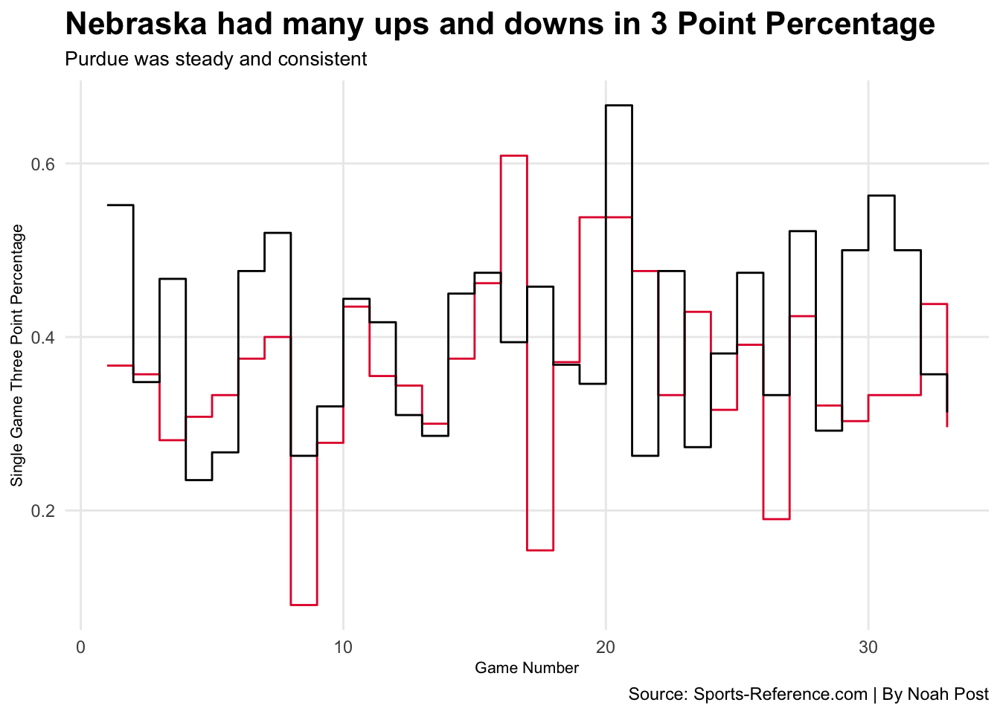

Code
library(tidyverse)Nebraska basketball fans have had to live with losing seasons after losing season, so the 2023-24 season was a breath of fresh air. The Huskers made the NCAA tournament for the first time in 10 years and finished 3rd in the conference, but they did not always let husker fans off the hook.
Finishing the season at 23-11 any husker fan you ask would say it was a magical season. But when said and done the stats from the season show a team full of road struggles and a heavy reliance on the three-ball. Just how inconsistent was the 2023-24 Nebraska Cornhuskers? Lets take a look at the statistics.
First to understand the inconsistency one must fully grasp how many time the huskers failed to get the job done on the road. At home in Pinnacle Bank Arena the Huskers thrived, while on the road it was the exact opposite. Racking up a record of 18-1 while at home is a feat in the big ten, but on the other hand have a 3-8 during road games throughout the year is downright disgusting. The Huskers also logged a record of 2-2 during neutral site games.
library(tidyverse)#|message: false
#|warning: false
logs24 <- read.csv("data/logs24.csv")#|message: false
#|warning: false
Home <- c("Win" = 18, "Loss" = 1)
Away <- c("Win" = 3, "Loss" = 8, 8)#|message: false
#|warning: false
library(waffle)#|message: false
#|warning: false
iron(
waffle(
Home,
rows = 3,
title = " Husker Home Games",
xlab = "1 square = 1 game",
colors = c("red", "black")
),
waffle(
Away,
rows = 3,
title = "Husker Away Games",
xlab = "1 square = 1 game",
colors = c("red", "black", "white")
)
)
ggsave("image.png")Saving 7 x 5 in imageNow knowing how catastrophic Nebraska performed on the Road let’s dive back into the stats to discover the Huskers team 3 point percentage game by game and how it compares to a powerhouse in Purdue.
Conference play started right before game ten right when the huskers had a bad stretch of three point shooting. Right around halfway through the season the huskers their best 3 point percentage of the season, but can not maintain it as it plummets in the next few games.
When comparing 3 point shooting to a dominant program like purdue, the huskers fall incredibly short at maintaining a good percentage. Purdue never falls under 20% during a single game on the year and that is partially a reason for their championship run.
#|message: false
#|warning: false
logs <- logs24|>
filter(Date < "2024-03-22") |>
group_by(Team) #|message: false
#|warning: false
bigten <- logsnu <- bigten |> filter(Team == "Nebraska")
pur <- bigten |> filter(Team == "Purdue")#|message: false
#|warning: false
ggplot() +
geom_step(
data = nu,
aes(x = Game, y = Team3PPCT, group = Team, color = "#E41C38"),
color ="#E41C38"
) +
geom_step(
data = pur,
aes(x = Game, y = Team3PPCT, group = Team),
color = "#000000"
) +
labs(
x = "Game Number",
y = "Single Game Three Point Percentage",
title = "Nebraska had many ups and downs in 3 Point Percentage",
subtitle="Purdue was steady and consistent",
caption="Source: Sports-Reference.com | By Noah Post") +
theme_minimal() +
theme(
plot.title = element_text(
size = 16, face = "bold"
),
plot.subtitle = element_text(size = 10),
axis.title = element_text(size = 8),
panel.grid.minor = element_blank()
)
When comparing the Cornhuskers single game three point percentage to Purdue it’s obvious that Nebraska had a lot more drastic drops and leaps compared to the Boilermakers. Purdue deservedly made a run to the championship game and consistent three point shooting was a big factor.
All of these statistics mean nothing when compared to just a few teams around the country. To truly find out how inconsistent Nebraska basketball was in 2023-24 lets take a look at how they compare to the rest of the country in some major stats such as rebounding and three pointer made.
Nebraska is atop the big ten conference with total three point field goals on the year and also are middle of the pack in rebounds. This is strong evidence that my question about being the most inconsistent team in the big ten has been proven wrong.
Lets see how Nebraska compares to some other teams around the country in terms of 3 pointers made. Nebraska is in the top 25 in three pointers made and sit right around average for total rebounds.
# label: install-gt-package
# install.packages("gt")#|message: false
#|warning: false
# label: setup
library(tidyverse)
library(gt)#|message: false
#|warning: false
# label: wrngl-elite-eight-data
datalogs <-logs24 |>
select(
TeamFull,
Team3P,
TeamTotalRebounds,
) |>
group_by(TeamFull,) |>
summarize(
Team3P = sum(Team3P),
TeamTotalRebounds = sum(TeamTotalRebounds)
) |>
rename(Team = TeamFull) |>
select(Team, Team3P, TeamTotalRebounds) |>
arrange(desc(Team3P))|>
top_n(25, wt = Team3P)#|message: false
#|warning: false
datalogs|>
gt() |>
cols_label(
Team3P = "Threes Made",
TeamTotalRebounds = "Rebounds"
) |>
tab_header(
title = "Nebraska Ranks 22nd in Season Three Pointers",
subtitle = "Huskers rebounding is average for the country"
) |>
tab_style(
style = cell_text(color = "black", weight = "bold", align = "left"),
locations = cells_title("title")
) |>
tab_style(
style = cell_text(color = "black", align = "left"),
locations = cells_title("subtitle")
) |>
tab_source_note(
source_note = md("**By:** Noah Post | **Source:** Sports-Reference.com")
)| Nebraska Ranks 22nd in Season Three Pointers | ||
|---|---|---|
| Huskers rebounding is average for the country | ||
| Team | Threes Made | Rebounds |
| Indiana State Sycamores | 390 | 1172 |
| North Florida Ospreys | 383 | 1000 |
| BYU Cougars | 378 | 1227 |
| Alabama Crimson Tide | 375 | 1229 |
| College of Charleston Cougars | 368 | 1264 |
| Creighton Bluejays | 364 | 1212 |
| Samford Bulldogs | 351 | 1119 |
| St. Joseph's Hawks | 351 | 1148 |
| Chattanooga Mocs | 349 | 1122 |
| Arkansas-Pine Bluff Golden Lions | 337 | 972 |
| Hofstra Pride | 330 | 969 |
| Morehead State Eagles | 329 | 1264 |
| Fairfield Stags | 327 | 1068 |
| Kentucky Wildcats | 327 | 1132 |
| Arkansas State Red Wolves | 324 | 1240 |
| Liberty Flames | 324 | 995 |
| Marquette Golden Eagles | 323 | 1087 |
| UNC Greensboro Spartans | 322 | 1038 |
| Purdue Fort Wayne Mastodons | 321 | 1014 |
| Furman Paladins | 320 | 1144 |
| Montana State Bobcats | 319 | 991 |
| Nebraska Cornhuskers | 319 | 1176 |
| Oakland Golden Grizzlies | 318 | 1202 |
| Pitt Panthers | 317 | 1126 |
| VCU Rams | 317 | 1183 |
| By: Noah Post | Source: Sports-Reference.com | ||
When taking in data from all of my graphics, it seems I have been far too harsh on the Cornhuskers by saying they might have been the most inconsistent team in the Big Ten. While have a rough road record and a heavy reliance on the three point shot can lean towards an inconsistent team. Every team in college basketball has their ups and downs and Nebraska is no different.